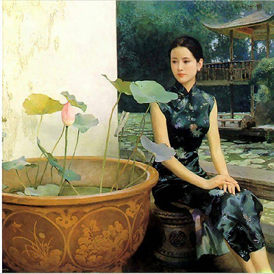

The Itinerary of our CUNY-BC China program includes visits to five major cities:
Beijing (3 Days)
Xi’an (2 days)
Nanjing (about 2 weeks)
Suzhou (1 day)
Shanghai (3 days)
In addition to those five cities, travel agencies in China can also try to arrange side trips, during our stay in Nanjing, to the following famous tourist attractions:
Hong Kong (via Shenzhen): $680
Yangzhou: $85
Yellow Mountain: $26
The following side trips may happen but will have to depend on interest and prices:
Guilin & Yangshuo
Sanya (Oriental Hawaii)
Tibet - Lhasa (via Chengdu)
We understand that many students are visiting China/Asia the first time and may not go there again in the near future, so we try to help with some side trips if possible, such that students can see those additional famous and beautiful places at a fraction of the usual cost (should they make the trip on their own).
Announcement of side trips is made to the program participants only after the international flights are confirmed, in April for the summer program and in November for the winter program. At that time, the participants will decide which side trips they want to make.
Scroll down this page for details of each side trip.
Please be aware of the following:
Side trips are additional cost, which will be given to the participants after the program is put together (around 2 weeks after the application deadline). Depending on the distance, number of days, means of transportation and service provided, the cost of the side trips varies, from about $85 to about $650 if the trip requires more than one flight within China, or about $1,500 for Tibet. Chinese airlines are more expensive.
Each side trip requires sufficient interest to happen (about 15 people).
Not all the side trips may be organized during each program. Sanya may be offered in the winter; Guilin is good for the summer.
The length of side trips varies (some for one day and some 2-4 days).
We try to schedule the side trips apart from each other, so that the trips do not conflict with the class schedules (some side trips are part of the course content). One faculty will go on each side trip, and the students who are not making the side trip will stay in Nanjing for their classes.
Extended trips to Japan and/or South Korea:
Such trips happen either before or after the China program. Students plan their own itinerary for their stay (often 3-7 days).
We ask travel agencies to book the international flights with stops in Japan or S. Korea (airfare add-on will apply). Those who want to extend trip to those places need to submit a plan by the program application deadline.
Students book their own hotels, e.g., via airbnb.
Hong Kong
The side trip to Hong Kong happens around the first weekend of our stay in Nanjing (after tours of Beijing and Xi’an).
Airline tickets from Nanjing to Hong Kong are expensive (about US$290 one way), and hotels in Hong Kong are also expensive. However, it costs less if we fly from Nanjing to Shenzhen (which is right next to Hong Kong). To make the Hong Kong side trip affordable, we choose to stop in Shenzhen before entering Hong Kong. Travel agencies will arrange flights and hotels for the group.
Shenzhen is an exciting modern city. It was still a fishing village in mid 1980s, but now it is a huge booming cosmopolitan with about 12 million people, and serves as the back garden for people of Hong Kong, many of whom commute between the two cities on a daily basis. You can search for information about Shenzhen online. See a picture of Shenzhen here
The Hong Kong side trip is for 4 days, with the tentative plan as follows:
Day 1: Fly from Nanjing to Shenzhen (2 hrs) and stay in Shenzhen for one night
Day 2: Cross the border in the morning to enter Hong Kong and stay in Hong Kong for the night
Day 3: Continue to tour Hong Kong, return to Shenzhen in evening and stay in Shenzhen for the the night
Day 4: Fly back to Nanjing from Shenzhen
We strongly recommend that students who are business or economics majors make this side trip, so that you have opportunities to see Hong Kong as the UK version of capitalism and Shenzhen as the Chinese version of capitalism.
Please Note:
If you are planning a side trip to Hong Kong during your stay in mainland China, you will need to apply for double entry visa at the Chinese consulate, so that you can be allowed to return to mainland China after the Hong Kong trip.
Hong Kong is a special administrative zone of P.R. China and it is governed under special laws. Citizens from many countries such as the US, Canada and UK do not need a Hong Kong visa to enter Hong Kong. However, passport holders of some other countries must have another visa from a special office of Hong Kong (which can be found in many major cities such as New York City). Before you decide to make the Hong Kong side trip, you must check the following website to see if you are from one of those countries that need a Hong Kong visa to visit Hong Kong: http://www.immd.gov.hk/ehtml/hkvisas_4.htm; if your country is not on the list, you must also apply for a Hong Kong visa.
Sanya
About the 2nd week during our stay in Nanjing
Some think Sanya is Oriental Hawaii, and many others consider it a paradise. People go there to enjoy the beautiful beaches, tropical scenery, tasty seafood, scuba diving, parasailing, and many other beach activities. In recent years, rich tourists for all over China and other countries such as Russia, South Korea and Mongolia flock to Sanya and that is driving the prices up significantly, especially in the winter.
Tentative Plan:
Day 1: Fly to Sanya from Nanjing (3 hrs) in the afternoon and enjoy the Sanya Bay
Day 2: Da Donghai Bay
Day 3: Enjoy whichever bay you want, have another relaxing day before flying back to Nanjing in the evening
Sanya (where annual Miss World Pageants are held), at the southernmost tip of Hainan Island, is becoming the most popular destinations for vacationers from both China and the world. A coastal city with the tropical scenery, Sanya is like a pearl on a piece of green jade, the Hainan Island.
Sanya's annual average temperature is 25.4 centigrade (77 F). In July, the hottest month, its average temperature is 28 centigrade (82 F) and in January, the coldest one, 21 centigrade (70 F). It is always called "WINTER PALACE."
Sanya has five kinds of treasures: Sea, Sand, Air, Green and Sunshine. The sea is fade-like, the sand rouge-like, the bay rainbow-like and the sight picturesque, which makes Sanya rival Hawaii in beauty yet not yet commercialized.
Sanya has s long history. There are famous places of scenic beauty and historical interest such as the ying wan pagoda built in the first year of the Qing Dynasty(1851), the word" ÊÙ"(Longevity) on a monument which was written by the Empress Dowager Ci xi, TiaYaHaiJiao (Land's End) and the Cape of the sea where the sky can't be told from the sea in color, the Turn-round Deer with a myth on Love affair, Da Donghai (sea) and Xiao Donghai (sea), fine places for swimming in winter, Ya long Bay and Sanya Bay with fame of "Hawaii in the east", the major and minor Caves with a wonder of the sea and mountains, the Pen-Drop Cave, on the top of which a fairy pen is being hung high, the Eastern Island and the western Island like two turtles floating on the waves. In addition, the silent coconut gardens, the customs of the Li, Miao and Hui nationalities.
Sanya is rich in the resources of the sea and the topical plant. Treasured seafood such as "Sanya Three Delicacies” (sea cucumber, shark's fin and abalone), sea-snakes, and jelly fish can be served. Tropical fruits like Lychee, gui yuan, pineapple, Jack-fruit, mongo and bananas are available year round.
Yellow Mountain
(i.e. Huangshan黄山)
The Yellow Mountain (Huangshan in Chinese) is acclaimed to be the most beautiful mountain in the world, as the saying often goes: no other mountains are worth seeing after a trip to the Yellow Mountain.
The Yellow Mountain offers breathtaking views. Chinese artists often go there for artistic inspirations. People go to Yellow Mountain all year around, but students of this program always go there in the summer and sometimes in the winter.
It is a two-day trip:
Day 1: Charter bus from Nanjing to the Yellow Mountain City (about 5 hours)
Visit the countryside and the ancient town
Day 2: Take the cable car to the top of the Mountain
Enjoy the breathtaking views for the whole day (and return to Nanjing by chartered bus)
Return to our hotel in Nanjing
There are tourists at Yellow Mountain even in the winter. The local tour guides and travel agencies often provide special anti-slippery covers for shoes, so that it is safe to walk if there is snow. Yellow Mountain in the winter looks much like the other seasons in terms of its beauty except that there is a bit less green.
Guilin
Tentative itinerary may be as follows:
Day 1: Fly 2 from Nanjing to Guilin (2 hrs) in late afternoon
Day 2: Tour the Lijiang River by boat. This is going to be a very beautiful day. Tour guide and a bus pick up at the airport and transport the group to the hotel.
1. You enjoy the beautiful board ride on the river for half of the day until reaching Yangshuo (in the summer months, there is a chance that the river water might be higher than usual, but that should not affect the beautiful views). Make sure you have enough memory in your camera.
2. In the afternoon, you can rent a bike with the tour guide to see the beautiful views of the Yangshuo countryside.
3. In the evening, you can enjoy the magnificent open show of Impressions of Lijiang (performed by the local people) if the water is not too high; or you can walk around on the west street with many bars and foreign tourists.
Day 3: Back from Yangshuo to Guilin for additional sites in the city and vicinity (time permitting) before flying back to Nanjing in evening.
The most beautiful part of the trip is the boat ride on the river from Guilin to Yangshuo. Yangshuo is about 1 hour and half away from Guilin by bus, and about 4 hours by boat. Of course, tourists all choose to travel by boat.
One famous saying goes like this: Guilin’s scenery is the best in the world, but Yangshuo still beats Guilin. All tourists, Chinese and non-Chinese alike, especially dream to see the stunning landscape of Guilin and the breathtaking beauty of the Lijiang River.
Yangzhou
Yangzhou, a not-too-big yet very pretty city, is only about one hour and half north of Nanjing. With the Grand Canal running through the city and the Yangtze River flowing from west to east to its south, Yangzhou furthered an indigenous and growing economic market of China's urban centers throughout the ages since the Sui dynasty.
During Tang Dynasty, Yangzhou was very prosperous, comparable to modern NYC, Shanghai or Beijing. At one point, about one third of the country’s tax revenue came from Yangzhou where rich merchants, scholars, poets, artists, etc, chose to enjoy their life. The city was also one of the most-picked destinations for emperors when they travelled outside the capital in the north.
What is special about a trip to Yangzhou?
Beautiful scenery (gardens, ancient streets & houses, towers, pagodas, etc)
History (especially modern Chinese history)
Art, culture, museums, and Cuisine
During our stay in Nanjing, we often make a one-day trip to Yangzhou, which may include the following sites and activities:
1. Slender West Lake (shou-xi-hu)
2. Ten-Thousand flower garden (wan-hua-yuan)
3. The Grand Canal
over 2,000 years old, and still active
Main transportation artery for ancient China
4. Dongguan scenery area
Well-preserved streets and houses of unique ancient architecture
Offer beautiful views of ancient China
5. Yangzhou Museum with rich and unique collections
Offer beautiful views of ancient China
block printing museum
porcelain
6. Tomb of Puhaddin (by the Grand Canal)
from the Silk Road
7. Yangzhou Lacquer ware (nice gifts)
8. Enjoy tasty Yangzhou cuisine
Yangzhou fried rice (served in Chinese restaurants all over the world, but the one you have in Yangzhou is authentic and the best)
It is said that Yangzhou buns are shipped by plane to Tokyo for the Japanese emperor
We strongly recommend that students in the courses of the Development of the Silk Road, Revolutionary China and Asian Business make this side trip to Yangzhou to help them better understand many topics in the courses.
The following links are in English, by Travelogue of CCTV (China Central Television):
Yangzhou has a history of 2,500 years. The city was one of ten cities in the world around 1800 A.D, and had the largest population over half million.
Until the 19th century, Yangzhou acted as a major national political, financial and trade center and a transport hub duo to its excellent location at the junction of the Yangtze, the Grand Canal and the Huaihe River. This historical period had left Yangzhou a large number of treasures, including valuable architectures and arts, splendid culture and well-known celebrities.
You all know about Marco Polo; he once served as a municipal official in Yangzhou around 1282-1287 under Yuan Emperor Kubilai Khan.
Under the 2nd Emperor Yangdi (604-617) of the Sui Dynasty (581-617), the city was the southern capital of China (called Jiangdu) upon the completion of the Grand Canal. Thus, it became a leading economic and cultural center and major port of foreign trade and external exchanges since the Tang Dynasty (618-907). There lived many Arab and Persian merchants.
The mosque complex at the Tomb of Puhaddin is essentially a Ming Dynasty graveyard that includes the tomb of Puhaddin. According to information at the tomb, he was a 16th generation descendant of Muhammad, The Prophet. The tomb is on the eastern bank of the (Old) Grand Canal in the eastern sector of the city and is adjacent to a mosque which houses a collection of valuable materials documenting China's relations with Muslim countries.
Senior Monk Jianzhen from Yangzhou brought Buddhism to Japan, after six attempts to cross the dangerous seas.
Art
“Eight Eccentrics of Yangzhou (Yangzhou Baguai)” is the name for a group of eight Chinese painters known in the Qing dynasty for rejecting the orthodox ideas about painting in favor of a style deemed expressive and individualistic.
The term was also used because they each had strong personalities at variance with the conventions of their own time. Most of them were from impoverished or troubled backgrounds. Still the term is more a statement about their style rather than a judgment of them as being among history's noted eccentrics.
The Slender West Lake
Be sure to check this link first: http://www.chinaculture.org/gb/en_travel/2003-09/24/content_34224.htm

The Slender West Lake, with a history since the Qing Dynasty, was originally a natural river course connecting to the Grand Canal during the Sui (581-618) and Tang Dynasty (618-907) periods. In order to celebrate the Emperor Qianlong’s visit, the river was widened and the shores along the river were landscaped with numerous gardens, pavilions, and pagodas. The purpose to use “Slender” to describe the lake is to contrast it with the West Lake of Hangzhou, Zhejiang Province, one of Jiangsu’s neighbor provinces, by emphasizing that the lake is narrower but longer, like a slender and tall beauty.
The lake is 4.3 kilometers in length with an area of over 30 hectares. Main tourist interests include Spring Willows along the Long Causeway, Xuyuan Garden, Xiaohin Hill, Chuitai Terrace, Five Pavilions and White Pagoda.
The lake is typical of the Chinese water-based garden art combining the elegance of the south with magnificence of the north. Taking a boat tour in the lake or a walk along its shores will conveniently bring you to other Yangzhou's tourist attractions in the city.
Yangzhou Cuisine
Some of China’s most creative and eye catching dishes come from the Yangzhou school of cuisine called Huaiyang, which is a distinctive and masterful skill that locals are quite proud of.
Yangzhou dishes may be one of the reasons why the people of Yangzhou are so infatuated with their city. They have an appealing color, aroma, taste and also appearance. The original color of each ingredient is preserved after cooking, and no oily sauce is added, so as to retain the fresh savor of the food.
Yangzhou buns (steamed ones) are the most delicious. We will certainly have some (and bring some back to our hotel in Nanjing if you want).
In Yangzhou all dishes, whether cheap or expensive, are elaborate. Cooks will not scrimp on their work, even with Zhugansi (stewed sliced dry bean curd), a popular dish that costs only a few yuan. Dry bean curd is made by each restaurant that serves it, so the flavor is guaranteed. The cook slices the 1-cm-thick curd into 30 shreds, each one paper-thin but none broken, and then stews them for hours with chopped bamboo shoots and shelled shrimps in chicken soup. In this way the dry bean curd shreds can soak up the flavor of the other ingredients, and the soup is clear but savory. It is not only Yangzhou cooks but also the ordinary people who are conscientious about cooking.
Tibet
The Tibetan plateau rises formidably to the north side of the massive Himalayas; It is the roof of the world. Many dream of visiting this sacred land and getting to know the wonderful Tibetan people, the religion and the culture in this spectacular mountainous area.
Travel to Tibet, a journey to a unique destination, a trip to another world that is never to be forgotten!
Tentative Itinerary:
Day 1: Flight around noon from Xi’an to Lhasa (and rest in the hotel after arrival to get acclimatized to the high altitude)
Departure from Xi’an to Lhasa on the 2nd day of our stay in Xi’an, when the rest of the group will depart for Nanjing in the evening
Day 2: Tour Lhasa--visit major religious and cultural sites
Day 3: Visit a local Tibetan family and experience the rural life; late afternoon flight from Lhasa to Chengdu
Day 4: Tour Chengdu and late afternoon flight to Nanjing
The Tibet tour offers you a kaleidoscope of Tibetan people, scenery, religion and culture:
On this very special trip, you travel from Xi’an all the way across the continent up onto the Tibetan Plateau at more than 11,400 feet and back to Chengdu and then to the coastal city of Nanjing.
You will come in contact with Tibetan farmers, monks, lamas, scholars, teachers, students, and many others. This is a true adventure crisscrossing the vast China-Tibet continent.
Tour Highlights:
Group travel to Lhasa Tibet and ancient city of Chengdu:
Lhasa (capital of Tibet)
Chengdu
First-hand encounter with mystical Tibetan religion and culture
Explore the Dalai Lama’s Potala Palace (the political center of Tibet) and Jokang Monastery (center of Tibetan Buddhism)
Enjoy the stunning landscape and scenery on the top of the world
Experience the genuine spirituality in the Tibetan life: walk in streets of Lhasa, meet local people, taste the exotic cuisine, breathe the holy air
Stop-over at the charming city of Chengdu in southwest China
Hug pandas at the China Panda Reservation
Walk into the old streets of the ancient town Jinli
Notes:
The altitude of Lhasa (Tibet) is 3,650 meters (or 11,975 feet). People with high blood pressure, heart attack risks & respiratory conditions are advised not to travel to Tibet. You should check with your physician before applying.
The climate in Lhasa (Tibet) is quite pleasant year round.
Non-Chinese citizens will need to apply for a special Tibet Entry Permit (the travel agencies in China will help with this permit. The document fee and application fees for this Tibetan Entry Permit will be included in the cost to be collected.) . Issuance of the Tibet Entry Permit is subject to the government approval and may be affected by the political situation in Tibet.